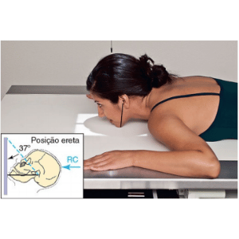
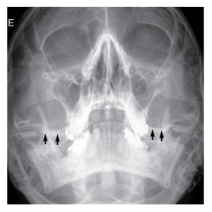
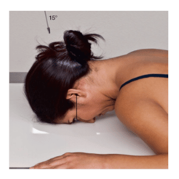
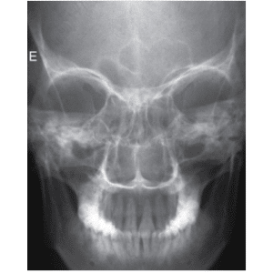
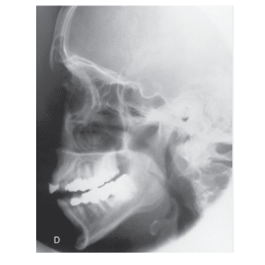

OSSOS DA FACE / método WATERS
Paciente
Paciente em D.V ou ortostático. Pescoço em hiperextensão. MMSS ao lado do crânio, MMII estendidos.
Chassis / Filme
18×24 – longitudinal panorâmico.
Raio central
⊥ orientado p/ região do bregma e deve sair no acântio.
DFF
1,00 m – com bucky.


Observação: PMS ⊥ ao filme. LMM ⊥ ao filme.
OSSO DA FACE / método CALDWELL
Paciente
Paciente em D.V. ou ortostático, MMSS ao lado da cabeça, MMII estendidos.
Chassis / Filme
18×24 – longitudinal panorâmico.
Raio central
15° Caudal, orientado para a região lambdóide, saindo no násio.
DFF
1,00 m – com bucky.


Observação: PMS ⊥ ao filme. LOM ⊥ ao filme.
OSSOS DA FACE – PERFIL
Paciente
Paciente em D.V., posição de nadador ou ortostático. Crânio em perfil absoluto.
Chassis / Filme
18×24 – longitudinal panorâmico.
Raio central
⊥ orientado entre o canto externo da órbita e o MAE (zigomático).
DFF
1,00 m – com bucky.

Observação: PMS paralelo ao filme. LIOM paralela a borda superior do filme, LIP ⊥ a mesa.